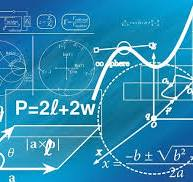

The Gamma Function: How Factorials Escape Whole Numbers

What happens when you take 2.5 factorial? The surprising answer unlocks one of the most elegant functions in all of mathematics.
# The Gamma Function: How Factorials Escape Whole Numbers
## Introduction
Factorials are among the most familiar concepts in mathematics. Defined for positive integers, a factorial represents
the product of all whole numbers from 1 up to a given number. For example, 5! = 5 × 4 × 3 × 2 × 1 = 120. Factorials play
a crucial role in combinatorics, probability, algebra, and many areas of science. However, a fascinating question arises
when mathematicians attempt to extend factorials beyond whole numbers. What does 3.5! mean? Can a factorial exist for
fractions, irrational numbers, or even complex numbers? The answer lies in one of mathematics' most elegant creations:
the Gamma Function. By extending the concept of factorials to a much broader domain, the Gamma Function demonstrates how
mathematical ideas can evolve beyond their original definitions and reveal deeper structures within the universe of
numbers.
## The Limits of Traditional Factorials
The factorial operation is naturally defined only for non-negative integers. It provides meaningful results when
counting arrangements, permutations, and combinations of discrete objects.
For example:
* 3! = 6
* 4! = 24
* 5! = 120
While these values are easy to compute, the definition offers no direct method for evaluating factorials of non-integer
values such as 1.5!, π!, or (-0.5)!.
This limitation became increasingly important as mathematicians explored more advanced areas of analysis and sought
continuous functions that could generalize discrete operations. The challenge was to create a function that preserved
the familiar properties of factorials while extending them to a broader class of numbers.
## The Birth of the Gamma Function
The solution emerged through the work of mathematicians such as Leonhard Euler in the eighteenth century. Euler
introduced what later became known as the Gamma Function, defined by the integral:
\Gamma(x)=\int_0^{\infty} t^{x-1}e^{-t},dt
This formula may appear unrelated to factorials at first glance. However, one of its most remarkable properties is:
\Gamma(n)=(n-1)!
for every positive integer (n).
Thus:
* Γ(1) = 0! = 1
* Γ(2) = 1! = 1
* Γ(3) = 2! = 2
* Γ(6) = 5! = 120
The Gamma Function perfectly reproduces ordinary factorial values while extending the concept to infinitely many
additional numbers.
## Factorials Beyond Whole Numbers
The true beauty of the Gamma Function emerges when evaluating non-integer values.
One of the most famous results is:
\Gamma\left(\frac{1}{2}\right)=\sqrt{\pi}
Using the factorial relationship:
[
\left(\frac{1}{2}\right)! = \Gamma\left(\frac{3}{2}\right)
]
which evaluates to:
[
\frac{\sqrt{\pi}}{2}
]
This result is astonishing because it connects a counting operation originally defined for whole numbers with the
geometric constant π. The appearance of π demonstrates the deep interconnectedness of different branches of mathematics.
The Gamma Function allows mathematicians to compute factorial-like values for fractions, irrational numbers, and even
complex numbers, creating a smooth continuum where factorials were once restricted to discrete points.
## The Recursive Structure
One reason the Gamma Function succeeds as a generalization is that it preserves the essential recursive property of
factorials:
[
n! = n(n-1)!
]
Similarly, the Gamma Function satisfies:
\Gamma(x+1)=x\Gamma(x)
This recurrence relation ensures continuity between traditional factorials and their generalized counterparts. Every
Gamma value builds naturally upon previous values, just as factorials do.
The preservation of this structure gives mathematicians confidence that the Gamma Function is not merely an arbitrary
extension but the most natural continuation of the factorial concept.
## Applications Across Mathematics and Science
The Gamma Function appears throughout mathematics, physics, engineering, and statistics.
In probability theory, it is central to important distributions such as the Gamma distribution, Beta distribution, and
Chi-square distribution. These models are widely used in data analysis, machine learning, reliability engineering, and
risk assessment.
In physics, the Gamma Function emerges in quantum mechanics, thermodynamics, and particle physics. Many integrals
describing physical systems can be expressed elegantly using Gamma-related formulas.
In complex analysis, the Gamma Function serves as a foundational object whose properties reveal deep insights into the
behavior of complex-valued functions.
Its widespread appearance demonstrates how a concept originally designed to extend factorials became one of mathematics'
most powerful analytical tools.
## Why the Gamma Function Is Beautiful
The Gamma Function is often celebrated because it embodies a central theme in mathematics: extending simple ideas into
richer and more general forms.
A basic counting operation used in elementary arithmetic evolves into a continuous function capable of handling
fractions, irrational values, and complex numbers. Along the way, it creates unexpected connections between algebra,
geometry, calculus, probability, and physics.
The function also highlights the power of mathematical abstraction. Rather than accepting the limitations of factorials,
mathematicians asked how the concept might be generalized. The resulting answer was not only useful but also elegant,
revealing patterns that were previously hidden.
This capacity to unify seemingly unrelated ideas is one of the defining characteristics of mathematical beauty.
## Conclusion
The Gamma Function represents one of the most remarkable extensions in mathematics. By transforming the factorial from a
function defined only for whole numbers into one that applies across a vast numerical landscape, it demonstrates how
mathematical concepts can transcend their original boundaries. Preserving the familiar properties of factorials while
introducing profound new connections, the Gamma Function links counting, geometry, analysis, probability, and physics
within a single framework. Its existence reminds us that mathematics is not merely a collection of rules but an evolving
exploration of patterns and relationships. Through the Gamma Function, factorials escape the confines of whole numbers
and reveal a deeper, more elegant view of the mathematical universe.